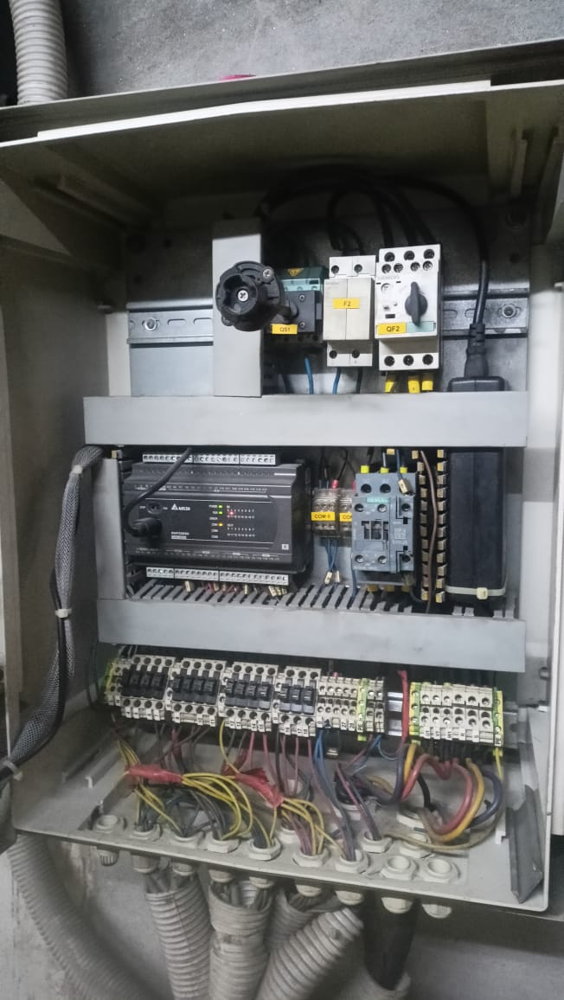
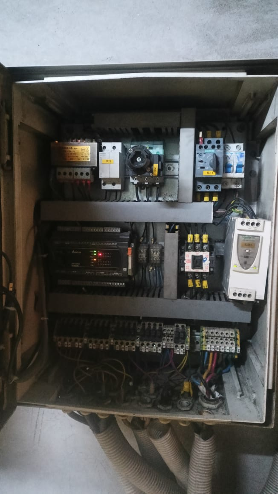
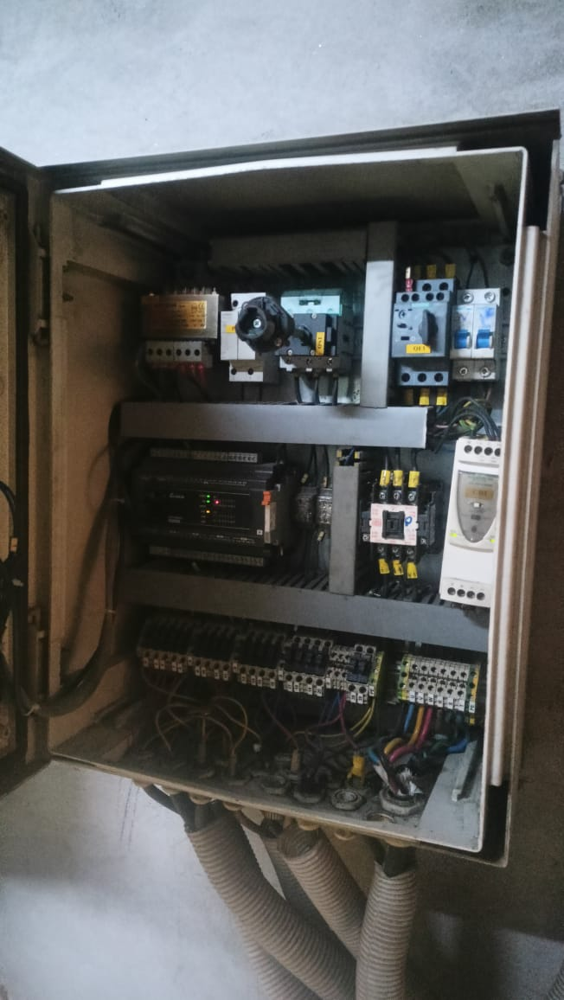
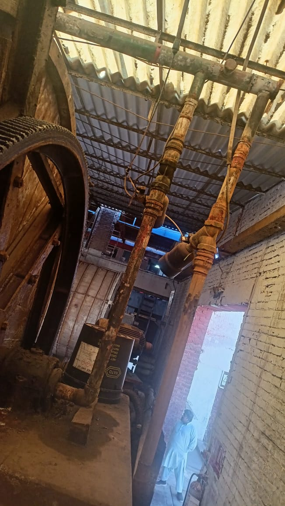
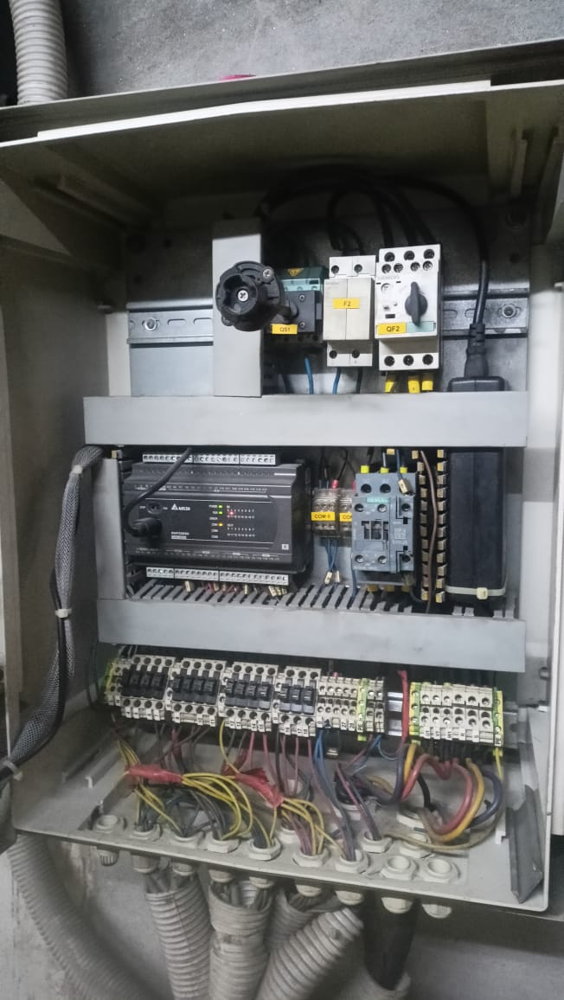
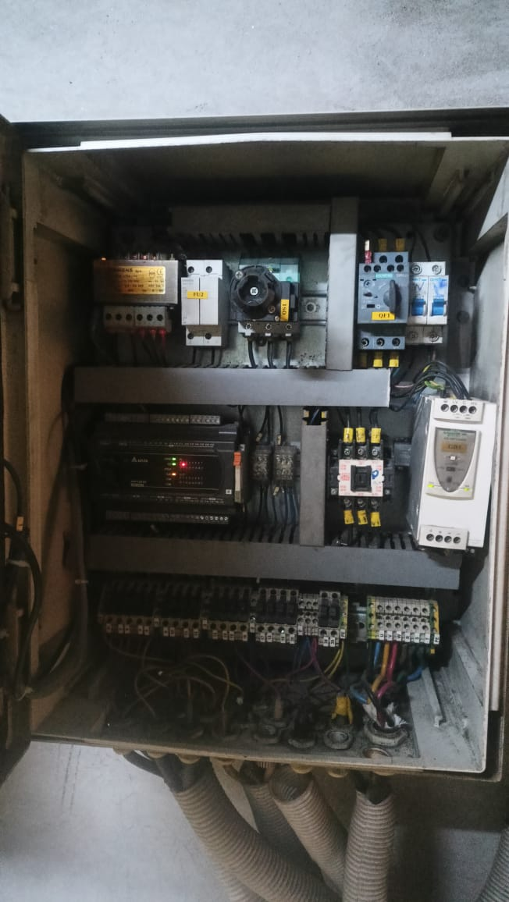
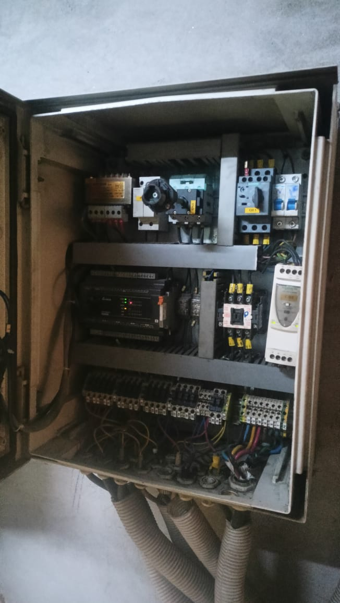
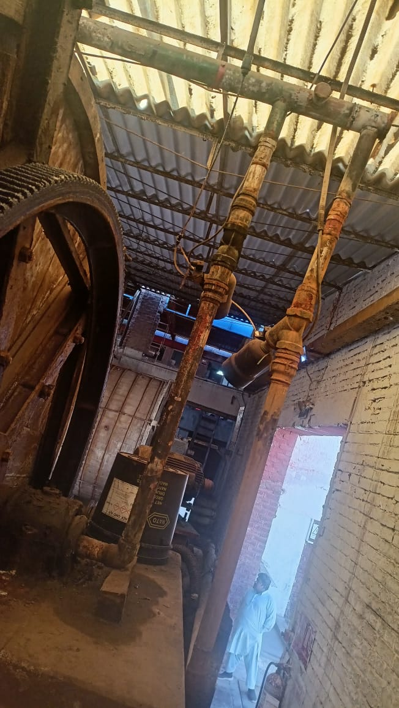

Water Dosing System Automation
Location: KTM,Multan
This project involved the complete automation and restoration of a Water Dosing System using Delta ES2 PLCs and a Delta DOP-107BV HMI. The system was designed to accurately control water distribution to multiple drums with reliable motor control, precise liter counting, and a fully restored control panel infrastructure.
System Overview
The automation system consists of two independent control panels, each equipped with a Delta ES2 PLC. Both panels were fully restored, including complete rewiring and panel reorganization. Each panel controls 15 water drums, making a total of 30 drums operated through the PLC-based system.
PLC & HMI Control Logic
- Delta ES2 PLC used for both control panels
- PLC programming developed in ISPSoft (Ladder Logic)
- Delta DOP-107BV HMI programmed using DOPSoft
- HMI screens designed for drum-wise water dosing control
- Water pump motor controlled through PLC logic
- Integrated liter counter for accurate water measurement
Water Dosing Operation
- Operator selects the required drum from the HMI
- Desired water quantity (in liters) is set from the HMI
- PLC starts the water pump motor
- Electromechanical valve of the selected drum opens
- Water flow is monitored through the liter counter
- Upon reaching the set quantity, the valve closes automatically
- Pump motor stops after dosing completion
Valve & Actuation System
- Electromechanical valves used for individual drum control
- Each panel controls 15 valves
- Total of 30 valves across two panels
- Valves allow precise water flow to each drum
- Valves controlled directly by PLC digital outputs
Control Panel Restoration & Wiring
- Complete restoration of both control panels
- Replacement and correction of internal panel wiring
- Proper cable routing and labeling for maintenance ease
- PLC control room wiring extended up to all 30 drums
- Improved system reliability and safety
HMI Features
- Drum-wise water dosing control interface
- Liter counter visualization for accurate dosing
- Simple and operator-friendly screen design
Software & Tools Used
- PLC: Delta ES2 Series
- PLC Programming: ISPSoft (Ladder Logic)
- HMI: Delta DOP-107BV
- HMI Software: DOPSoft
- Valves: Electromechanical water valves
- Measurement: Liter counter
Project Outcome
The Water Dosing System Automation provided accurate and repeatable water dosing for 30 drums, reduced manual intervention, improved process consistency, and enhanced operational efficiency. Fully restored control panels and structured wiring ensured long-term reliability and simplified maintenance for operators and technical staff.
Project Images
 






